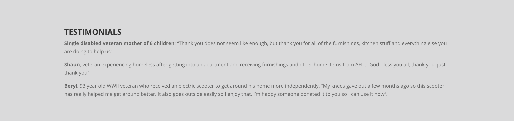

Research
I conducted primary research on my client, Household Goods, and secondary research on other similar organizations. Lastly, I interviewed my client and an individual in my target audience.
Primary Client Research
About Household Goods
Household Goods is a Massachusetts-based nonprofit with the mission of providing furniture and household items to individuals who cannot afford them. The organization was founded in 1990 by Ira and Barbara Smith. Over the years, Household Goods outgrew the couple's backyard to a 10,000 square foot home at 530 Main Street in Acton, Masschusetts. Here, individuals can both donate goods and recieve donations. Many of the people who need Household Goods are recently homeless, veterans, survivors of domestic violence, low income, immigrants, victims of disaster, or are coping with illness or disability. Every year, volunteers spend over 40,000 hours of their time, working with over 300 social service agencies to help 2,500 families throughout eastern and central Massachusetts make a home.
Current Site
The main issue I found with the Household Goods Site (which can be found here) is the system of organizing information. There is a lot of important information on the site, but it needs to be better organized. The website has an overwhelming amount of text, especially on the homepage, so it is pretty difficult to understand where to navigate next; all of the content needs to be simplified and better organized.
The website has the following main sections in the menu bar:

- Home
- Donate
- Volunteer
- Recieve
- About
- Contact
- Capital Campain
Home
The homepage includes importart COVD-19 information, a video, and links to donate goods or funds, as well as a place to sign up to volunteer. There is also information about the organization, as well as links to the 2019 Annual Report, Agency Referrals, a Volunteer Login, and Holiday Closures.
Donate
The Donate tab includes a place to donate goods, funds, or a vehicle. There is also a space for online donations and to donate to the Capital Campaign.
Volunteer
The Volunteer tab allows individuals to sign up to be part of a volunteer group or to host a volunteer drive.
Recieve
The Recive page includes infromation on how to recieve goods and a list of agencies with which the organization works.
About
The About tab has a history of HO\ousehold Goods, informational videos, testimonials and stories, and FAQs.
Contact
The Contact page features various ways to contact the organization and to sign uo to donate and recieve goods.
Capital Campaign
The nonprofit has a section on their website dedicated to the Captial Campaign, which will add onto and improve their exisiting facility. This page includes information and ways to contribute to the campaign.
Current Branding
Household Goods has established branding for themselves as an organzation. On the right is their current logo and slogan, "Helping People Make A Home." The nonprofit currently uses orange, yellow, green, and sometimes purple in all of their branding.
They also have an instagram @household_goods_acton. It is not a super active account, but it is used sometimes. When graphics are posted on the instagram, they align with the established brand colors, as pictured on the right of the logo.
Secondary Research
For secondary research, I looked at data, some organizations similar to Household Goods, and recent innovations in the world of furniture donation services.
Data
- Nine million tons of furniture go to landfills every year.
- In 2018 an estimated 20,068 people were experiencing homelessness in Massachusetts, representing a 20.6 percent increase compared to 2010.
- Nationally, there are 553,000 homeless people in the United States on a given night, or 0.17% of the population.
Similar Organizations

GreenDrop
GreenDrop has been selected by the American Red Cross, the Military Order of the Purple Heart, the National Federation of the Blind and the Society of St. Vincent de Paul of Philadelphia, to raise funds through the generation and collection of donated clothing and household items. Donated items are converted into critical dollars for these organizations, to assist them in upholding their mission and programs for supporting American veterans, the nation’s blind and neighbors in need throughout Philadelphia. Their website is here.
Americans for Indepedent Living & Furniture for Veterans
AFIL (Americans for Indepedent Living) and their partner agencies are providing safe, clean living spaces to veterans experiencing homelessness however, the units are typically unfurnished, leaving these Veterans to sleep on the floor, no means to cook, sit, or enjoy the basic comforts of a furnished home. It is this gap we are closing with the support of furniture and household items within the community. Furniture for Veterans was established to fill this void. Since the start of this program, AFIL has provided and delivered over $25,000 in donated furniture and items to Veterans who were previously experiencing homelessness. Learn more here.
News & Innovations
Green Standards
Green Standards is trying to combat the amount furniture that goes into landfills. Read more about it here. They are sustainably managing the resale, recycling, and donation of office furniture and equipment. Their site is a helful point of reference for me as I redsign the Household Goods site.
Amazon
Fulfillment by Amazon (FBA) Donations, is a new program beginning on September 1, 2019, that will donate eligible new and returned stock from third-party sellers in the US and UK to charity. It will work with charity partners and manage the logistics to make it easy for its independent sellers according to the company. The donation option will be the default option for all the company's sellers when they decide to get rid of unsold and wanted products in Amazon warehouses. Sellers will have the option to opt out of the program. Read more in this article.